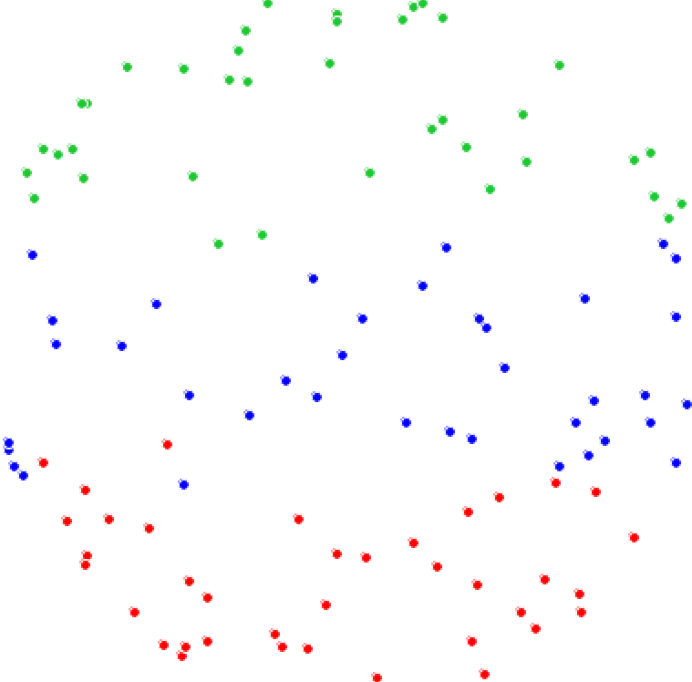

9.35 Illusion Laboratory
Spring 2023 Vision Lab

Does the coloring of points disrupt the kinetic depth effect?
Our illusions aim to address the following question: does adding color to points affect the kinetic depth effect? We will be exploring this question through several conditions as illustration by our illusions:
- Control: Same color
- Condition 1: Random coloring of points
- Condition 2: Split of blue and red points across two horizontal regions
- Condition 3: Split of blue, red, and green points across three horizontal regions
- Condition 4: Split of blue and red points across two vertical regions
- Condition 5: Split of blue, red, and green points across three vertical regions
We used these conditions to determine whether color would change the perceived 3D structure and its motion (ex: would having different colors of dots influence people to perceptually group a specific color of dots in one motion?).
Our illusion was inspired by Professor George Mather’s original work on the kinetic depth effect (see control), where he examined how the sinusoidal movement of dots gave rise to a perceived 3-D structure, which was a sphere in this study. We are examining the relationship of color towards perceptual grouping and its interaction with motion perception. When does perceptual grouping “dominate” over motion? When observing the control, we perceive a bistable image as the motion of the dots is ambiguous, since it seems to travel both right to left and left to right. The random coloring of points seems to maintain this perception as motion “overcomes” locally individual colors. However, with the split of colors across horizontal regions, we seem to perceive regions of different motion corresponding to the different colors, and it is harder to perceive one 3D structure with all of the dots (perceptual grouping “overtakes” motion). We find that the split of the colors across the vertical regions allows for an “easier” percept of a 3D sphere “painted” with three colors moving in a coherent direction.
With these preliminary observations, we can tentatively conclude that adding color to the points does seem to affect kinetic depth effect by influencing our perceptual grouping of the dots.
Illusions:
Control: Same color
Condition 1: Random coloring of points
Condition 2: Split of blue and red points across two horizontal regions
Condition 3: Split of blue, red, and green points across three horizontal regions
Condition 4: Split of blue and red points across two vertical regions
Condition 5: Split of blue, red, and green points across three vertical regions
Citation: Mather G. Early Motion Processes and the Kinetic Depth Effect. The Quarterly Journal of Experimental Psychology Section A. 1989;41(1):183-198. doi:10.1080/14640748908402359
Special thanks to Professor Mather for his help!